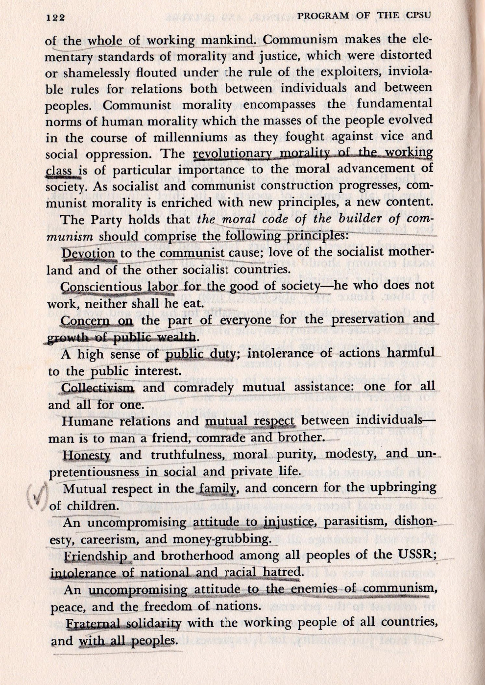

Moral Code of the Builder of Communism
Tuesday January 6, 2026
- Devotion to the communist cause; love of the socialist motherland and of the other socialist countries.
- Conscientious labor for the good of society—he who does not work, neither shall he eat.
- Concern on the part of everyone for the preservation and growth of public wealth.
- A high sense of public duty; intolerance of actions harmful to the public interest.
- Collectivism and comradely mutual assistance: one for all and all for one.
- Humane relations and mutual respect between individuals—man is to man a friend, comrade and brother.
- Honesty and truthfulness, moral purity, modesty, and unpretentiousness in social and private life.
- Mutual respect in the family, and concern for the upbringing of children.
- An uncompromising attitude to injustice, parasitism, dishonesty, careerism, and money-grubbing.
- Friendship and brotherhood among all peoples of the USSR; intolerance of national and racial hatred.
- An uncompromising attitude to the enemies of communism, peace, and the freedom of nations.
- Fraternal solidarity with the working people of all countries, and with all peoples.
The "Moral Code of the Builder of Communism" was part of the the 1961 Third Program of the Communist Party of the Soviet Union.
The core of the new approach to building communism was an attempt to replace Stalin's harsh administrative "pressure from above" with socialist self-government based on the principles of communist morality.
Thanks to Nick Aristov for pointing me to this! Here's the relevant page from the long PDF of the 1963 English translation, from which I copied the Moral Code above. (Wikipedia has slightly different text somehow.)
